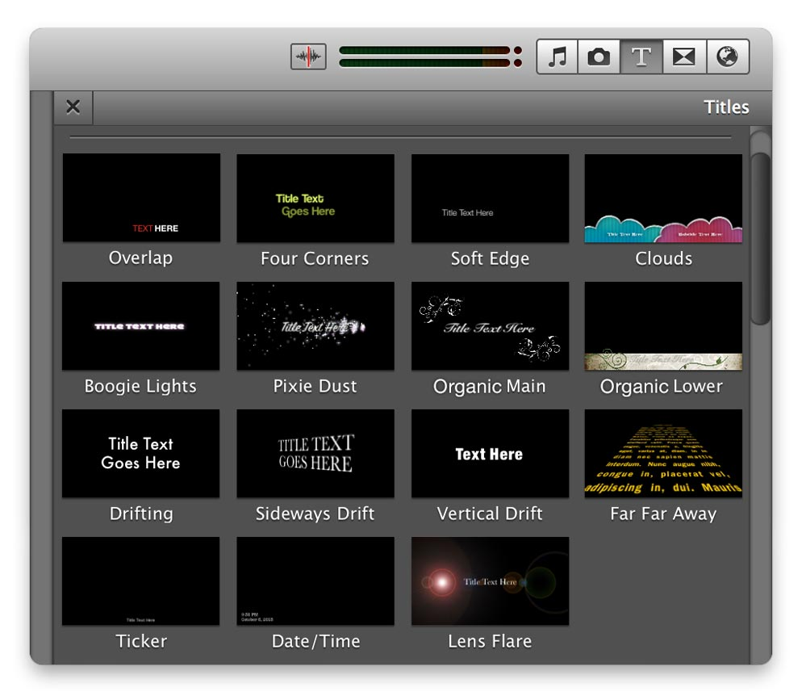
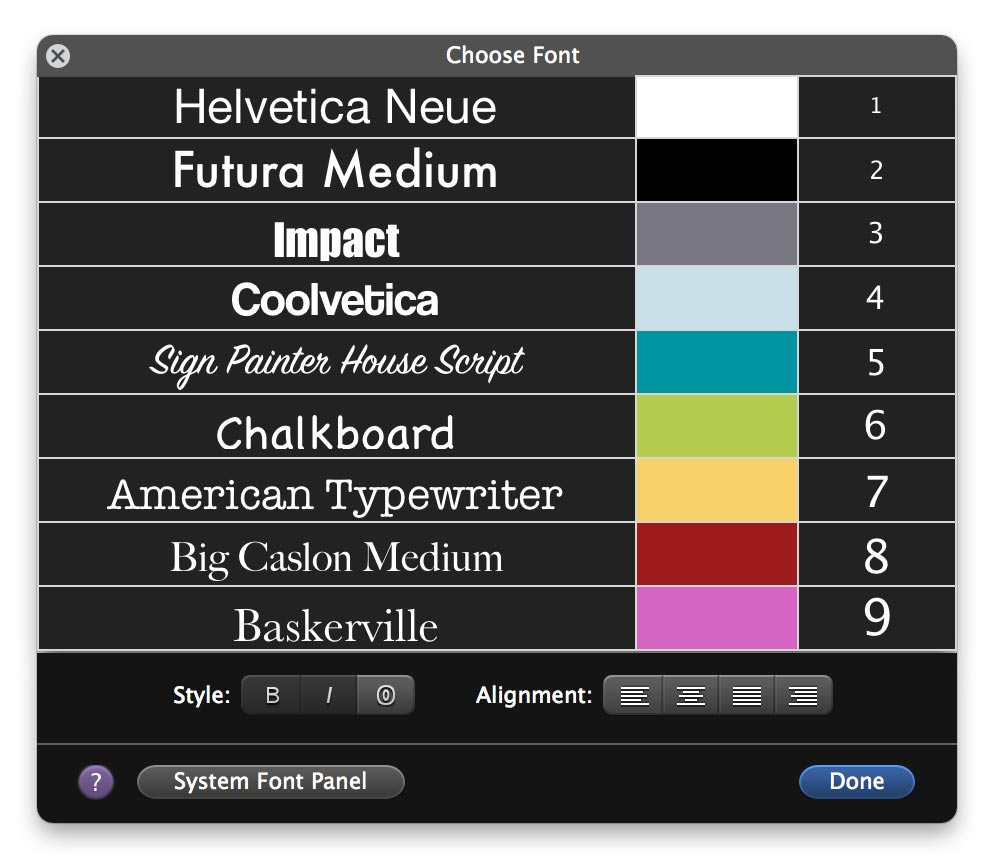

I worked exclusively on iMovie during my first two years at Apple (2007 - 2009). I was hired initially as a title designer, animator, and overall creative and then began to transition into doing user experience. My background and first degree are in filmmaking and I have always loved a great title sequence as it sets the tone for the entire film.
My Role and Process
I designed the titles in Photoshop and Illustrator and animated them in After Effects. I then coded the approved titles (17 out of 300) in Quartz Composer. I persuaded the department to license several new typefaces which allowed us to appeal to different demographics. I updated the fonts panel with these new fonts and a selection of colors which would look good over video and would compress well.
The Title Panel

The Titles
New Fonts and Colors Panel

iMovie iOS
This is one example of some work I did for iMovie on iOS. Sometimes even a simple animation can be a challenge. Working with iOS and probably all mobile OS, the devices have graphics cards which don't support some of the technology we have on our desktops or laptops. The challenge here was to get a realistic feel to the curtains opening without any using any deformation or fancy pre-made software plug-ins.